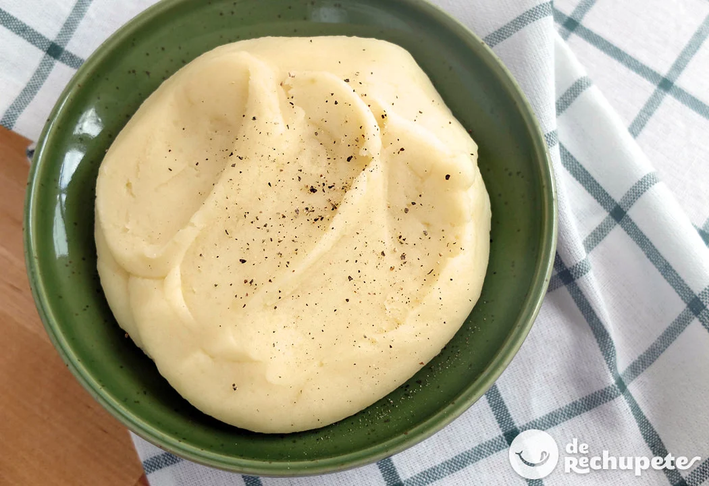

Puré de patatas casero y fácil

| Ingredientes: |
- 1 kg. de patatas (a ser posible para cocer)
- Agua(hasta que queden cubiertas)
- 10 g. de sal para cocer las patatas y un pizca al final del proceso (al gusto)
- 60 g. mantequilla
- 100 ml. leche entera
- Pimienta negra recién molida (opcional)
|
Método de preparación:
- Racion/es: 4
- Tiempo de preparación: 60min
- Elegir patatas de un tamaño parecido y cocerlas durante unos 30 minutos. Asegurese de comprobar si están listas pinchandolas con un tenedor.
- Todavía calientes pelarlas y pasarlas por un pasapuré.
- Retirar de la plancha y dejar reposar unos minutos antes de cortarlo. Esto permitirá que los jugos se redistribuyan y la carne se asiente. Cortar el entrecot en rodajas diagonales, en sentido contrario a las fibras de la carne.
- Una vez las patatas hechas puré incorporamos la mantequilla
- Calentamos la leche un poco y la incorporamos al puré
- Ahora comprobamos si la patata está suficientemente salada y añadimos al gusto, además añadimos la pimienta.